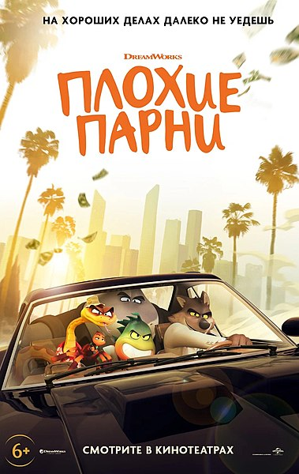

- «Плохи́е па́рни» (англ. The Bad Guys) — американский компьютерно-анимационный комедийный криминальный фильм[6][7][8], созданный студией «DreamWorks Animation» на основе одноимённой серии книгruen Аарона Блэйбиruen и выпущенный «Universal Pictures». Фильм снят режиссёром Пьером Перифелемruen (его полнометражный режиссёрский дебют) по сценарию Итана Коэна. Главных персонажей озвучивают Сэм Рокуэлл, Марк Мэрон, Аквафина, Крэйг Робинсон, Энтони Рамос, Ричард Айоади, Зази Битц, Алекс Борштейн и Лили Сингхruen. Сюжет рассказывает о группе животных-преступников, которые пытаются избежать тюремного срока под предлогом исправления и противостоять новому злодею, в то время как лидер банды обнаруживает, что ему нравится быть добрым.
Работа над фильмом началась в 2018 году; сюжет во многом был вдохновлён такими криминальными фильмами и аниме-сериалами, как трилогия Оушена, «Lupin III», «Криминальное чтиво» (1994) и «Выдающиеся звери», хотя и не были учтены мрачные темы, содержащиеся в последних двух произведениях. Анимация была вдохновлена фильмом Sony Pictures Animation «Человек-паук: Через вселенные» (2018) и выполнена студией DWA Glendale при поддержке Jellyfish Pictures, работа над озвучкой велась дистанционно в связи с пандемией COVID-19.
Премьера «Плохих парней» состоялась 17 марта 2022 года в странах Латинской Америки и 22 апреля в США в форматах 2D и RealD 3D. Фильм получил в основном положительные отзывы от критиков за анимацию, сценарий и озвучку и собрал $ 247 млн в мировом прокате, став 2-м самым кассовым анимационным фильмом 2022 годаruen.
Роли озвучивали
- Сэм Рокуэлл — Мистер Волк, остроумный и обаятельный серый волк-карманник и лидер банды «Плохих парней», выступающий в роли водителя команды. Он также может ломать четвертую стену, обращаясь к зрителям по поводу некоторых вещей.
Русский дубляж — Андрей Бурковский[9][10]
- Марк Мэрон — Мистер Змей, саркастичная и циничная сетчатая коричневая змея, профессиональный взломщик сейфов, напарник и лучший друг Мистера Волка.
Русский дубляж — Михаил Башкатов[9][10]
- Аквафина — Мисс Тарантула, остроумная брахипельма Смита, профессиональный хакер и единственная женщина в рядах «Плохих парней». Остальные члены банды между собой называют её «Кнопа».
Русский дубляж — Юлия Чуракова[10]
-
Крэйг Робинсон — Мистер Акула, инфантильная и чувствительная белая акула, мастер маскировки и самый массивный член банды.
Русский дубляж — Михаил Хрусталёв[10]
Энтони Рамос — Мистер Пиранья, вспыльчивая и непредсказуемая боливийская пиранья, самый молодой член банды.
Русский дубляж — Филипп Лебедев[10]
Ричард Айоади — Профессор Руперт Мармелад IV, морская свинка-филантроп, который предлагает Мистеру Волку и его банде начать заниматься «добрыми делами». Главный антагонист мультфильма.
Русский дубляж — Диомид Виноградов[10]
Зази Битц — Диана Лисингтон / Рыжая Лапка, лиса, губернатор, бывшая профессиональная воровка и возлюбленная Мистера Волка.
Русский дубляж — Анна Киселёва[10]
Алекс Борштейн — Мисти Лаггинс, человек, агрессивная начальница полиции, мечтающая посадить банду «Плохих парней» в тюрьму[11].
Русский дубляж — Анастасия Лапина[10]
Лили Сингхruen — Тиффани Фуфли, человек, женщина-репортёр, зачастую преувеличивающая в своих репортажах.
Русский дубляж — Анна Глаубэ[10]
Разработка
-
В июле 2017 года несколько киностудий выразили заинтересованность в адаптации серии детских книг Аарона Блэйбиruen
«Плохие парниruen» в полнометражный фильм[12]. В марте 2018 года Variety сообщила, что «DreamWorks Animation» разрабатывает
фильм на основе серии книг, а сценарий будет написан Итаном Коэном[13][14][15]. В следующем году, в октябре, сообщалось, что
фильм будет с режиссирован Пьером Перифелем, а Коэн и Хилари Уинстон будут авторами сценария фильма[16].
Фильм был описан как имеющий похожий поворот на жанр ограбления, который «Шрек» сделал в сказках и «Кунг-фу панда» сделал для жанра кунг-фу[16].
Уинстон была указана только как автор дополнительных сценарных материалов вместе с Йони Бреннером, а Итан Коэн, Блэйби и
Патрик Хьюз выступили исполнительными продюсерами фильма[17]. Актёрский состав был объявлен 28 июля 2021 года.